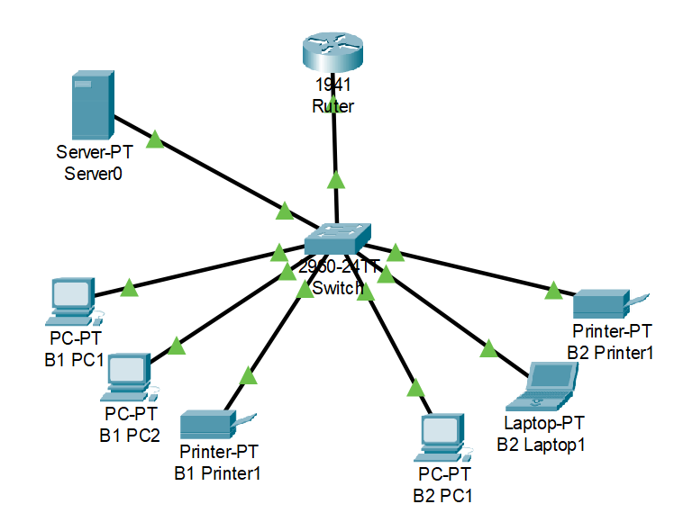
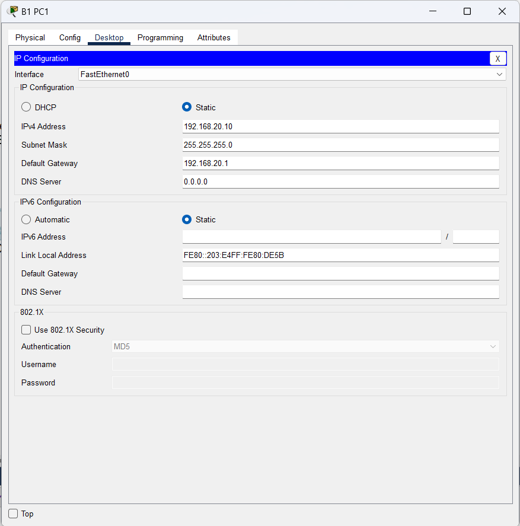

Intern Teknisk Dokumentasjon
Infrastruktur, subnettverk og sikkerhetskonfigurasjon for kontorhotellet.

Nettverksarkitektur (Router-on-a-Stick)
Infrastrukturen er bygget opp med en sentral Cisco-ruter koblet til en Layer 2-switch via en felles Trunk-linje (802.1Q). Dette muliggjør en kostnadseffektiv og skalerbar deling av ruterens fysiske grensesnitt inn i virtuelle subinterfaces.
Hver leietaker tildeles et dedikert VLAN som isolerer lag 2-trafikken (broadcast-domenet) fullstendig fra de andre bedriftene.

IP-adressering og VLAN-struktur
For å sikre kapasitet til 1–10 ansatte per bedrift, benyttes et 192.168.X.0/24-skjema som gir opptil 254 tilgjengelige adresser per subnett.
| Miljø | VLAN | Subnett | Standard Gateway |
|---|---|---|---|
| Admin / Drift | VLAN 10 | 192.168.10.0/24 | 192.168.10.1 |
| Bedrift A | VLAN 20 | 192.168.20.0/24 | 192.168.20.1 |
| Bedrift B | VLAN 30 | 192.168.30.0/24 | 192.168.30.1 |
| Webserver / DMZ | VLAN 50 | 192.168.50.0/24 | 192.168.50.1 |

Brannmur og Portstyring (ACL)
Sikkerheten håndteres via utvidede tilgangslister (Extended Access Control Lists) på ruteren med en "Closed by default" (Zero Trust) tilnærming.
Hvert subinterface slipper kun igjennom lokalt subnett-trafikk, webtrafikk til fellesløsningen på VLAN 50 (Port 80/443), samt ruting ut til internett. All trafikk på tvers av leietakernes subnetter blir eksplisitt droppet av ruteren.

Lokale ressurser og Periferiutstyr
Interne enheter som PC-er og nettverksprintere konfigureres med statiske IP-adresser eller dedikerte DHCP-pools innenfor bedriftens eget subnett (f.eks. printer på 192.168.20.50 for Bedrift A).
Siden switchen håndterer lokal lag 2-svitsjing internt i VLAN-et, kan bedriftens ansatte printe og dele filer lokalt uten restriksjoner, mens eksterne VLAN blokkeres på rutersiden.

WiFi-tilkobling og SSID-mapping
Det trådløse nettverket på kontorhotellet er satt opp med Multi-SSID-støtte på aksesspunktene. Hver leietaker har et eget unikt trådløst nettverksnavn (SSID) og WPA3-sikkerhetsnøkkel.
Trafikken fra den spesifikke SSID-en mappes direkte over i leietakerens korresponderende VLAN på switchen, slik at trådløse enheter følger nøyaktig de samme brannmurreglene som kablede enheteter.